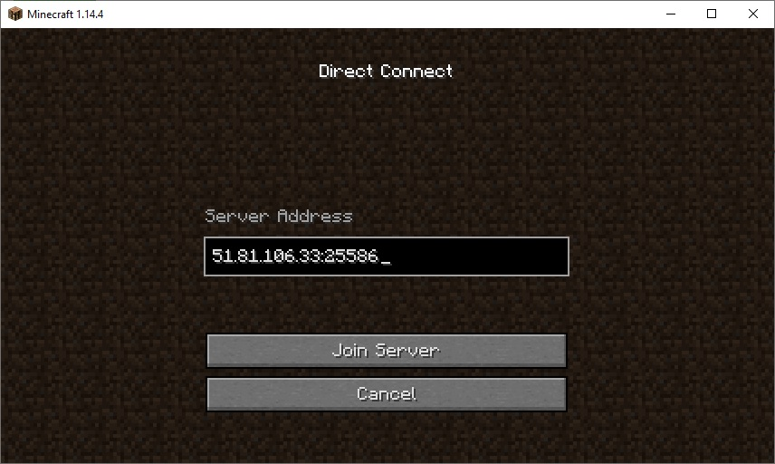

Public Server Test
51.81.106.33:25586
Our server is located at: 51.81.106.33:25586
This means the ip address is 51.81.106.33 and the port is 25586
To access the server go to multiplayer, direct connect and enter the location:

Note: Minecraft version is 14.4